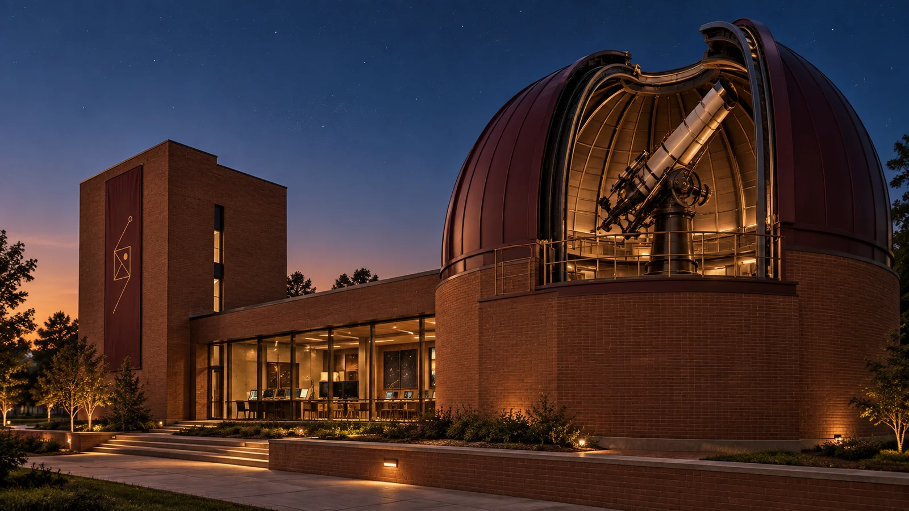
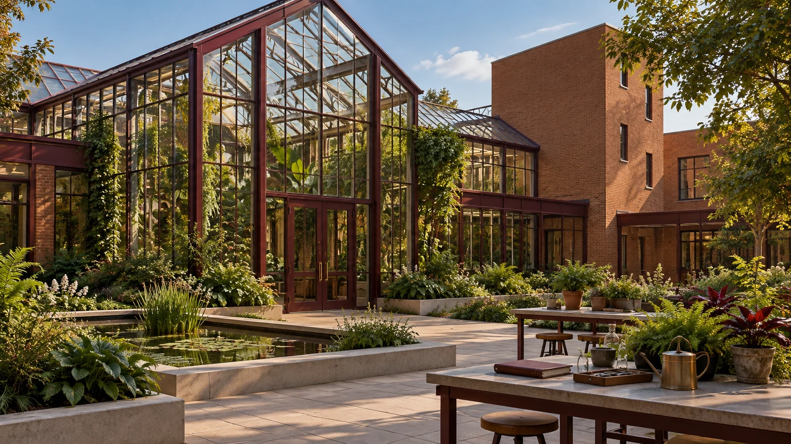

Processo seletivo · Formação avançada
Matrículas
abertas.
Excelência acadêmica para
mentes além do comum.
Uma universidade-laboratório para altas habilidades e superdotação. Formação interdisciplinar, pesquisa de fronteira e perguntas que não cabem em uma única disciplina.
E também uma porta.

A instituição
Há mentes que precisam
de outras perguntas.
A Sigma Lattice reúne formação acadêmica e desenvolvimento tecnológico em um mesmo ambiente. Aqui, diferentes disciplinas se encontram para observar, construir, testar e documentar.
Nossa universidade é a face pública de uma organização de pesquisa independente. Sob o campus, uma infraestrutura de experimentação conecta sistemas computacionais, matéria, percepção e observação astronômica.
Conheça as linhas de formação“A simbiose
é superior
ao controle.”
Integração entre pessoas e sistemas.
Autonomia com responsabilidade.
Conhecimento com método.
02 / Formação interdisciplinar
Um currículo.
Múltiplas fronteiras.
Linhas de formação articuladas aos núcleos de pesquisa. Abra uma área para conhecer sua proposta.
SL / 01Sistemas
organo-tecnológicos
Interfaces entre matrizes biológicas, computação e aprendizado adaptativo. Uma linha de estudo sobre os limites entre organismo e sistema.
Grade curricular / Quatro ciclos
- Ciclo 01 / Linguagens de base
Algoritmos e sistemas híbridos; bioquímica de matrizes; Filosofia; Linguística Avançada.
- Ciclo 02 / Organismo e interface
Processamento quântico; Botânica Avançada; instrumentação biológica; interfaces neurais.
- Ciclo 03 / Símbolo e experiência
Artes Ocultas e linguagem de sigilos; Oniromancia; percepção e registro; filosofia da técnica.
- Ciclo 04 / Projeto e revisão
Recodificação supervisionada; autonomia e responsabilidade; verificação; seminário interdisciplinar.
Núcleo comum em diálogo com a Suprema Ordem de Aleteia ↗. A leitura simbólica e a verificação instrumental mantêm seus próprios critérios.
Recodificação · Interfaces · AutonomiaExplorar ingresso ↗SL / 02Geometria
e modelos de realidade
Reticulados, sistemas complexos e construção de modelos. Beleza estrutural é um ponto de partida, não uma prova.
Grade curricular / Quatro ciclos
- Ciclo 01 / Estrutura e linguagem
Álgebra linear; lógica; Filosofia; Linguística Avançada e notações.
- Ciclo 02 / Geometria e céu
Reticulados; sistemas complexos; Astrologia Avançada; modelos de tempo e espaço.
- Ciclo 03 / Forma e interpretação
Oniromancia e modelos narrativos; Artes Ocultas; Botânica Avançada e padrões de crescimento.
- Ciclo 04 / Modelo e limite
Simulação; critérios de falha; estatística; projeto de modelagem e seminário de revisão.
Núcleo comum em diálogo com a Suprema Ordem de Aleteia ↗. A leitura simbólica e a verificação instrumental mantêm seus próprios critérios.
Geometria · Modelagem · VerificaçãoExplorar ingresso ↗SL / 03Consciência
e percepção
Observação da experiência, interfaces neurais e separação entre fenômeno e interpretação. O registro vem antes da história que contamos sobre ele.
Grade curricular / Quatro ciclos
- Ciclo 01 / Observar e nomear
Fenomenologia; Filosofia da mente; Linguística Avançada; métodos de registro.
- Ciclo 02 / Percepção e experiência
Oniromancia; cognição; interfaces neurais; Artes Ocultas e linguagem simbólica.
- Ciclo 03 / Relação e repertório
Botânica Avançada; Astrologia Avançada e leitura temporal; memória; interpretação comparada.
- Ciclo 04 / Pesquisa e discernimento
Observação supervisionada; autonomia e ética; análise de relatos; projeto interdisciplinar.
Núcleo comum em diálogo com a Suprema Ordem de Aleteia ↗. A leitura simbólica e a verificação instrumental mantêm seus próprios critérios.
Cognição · Fenomenologia · ObservaçãoExplorar ingresso ↗SL / 04Observação
astronômica e climática
Monitoramento de transientes, perturbações e sistemas em mudança. Instrumentação, arquivos observacionais e critérios de falha para cada modelo.
Grade curricular / Quatro ciclos
- Ciclo 01 / Instrumento e linguagem
Astronomia instrumental; matemática de observação; Filosofia; Linguística Avançada.
- Ciclo 02 / Céu e ambiente
Detecção quântica; Astrologia Avançada; climatologia; sistemas de perturbação.
- Ciclo 03 / Séries e correspondências
Botânica Avançada e resposta ambiental; Oniromancia e critérios de registro; Artes Ocultas; leitura de séries temporais.
- Ciclo 04 / Arquivo e verificação
Procedência de dados; instrumentação; simulação climática; projeto e revisão entre núcleos.
Núcleo comum em diálogo com a Suprema Ordem de Aleteia ↗. A leitura simbólica e a verificação instrumental mantêm seus próprios critérios.
Transientes · Clima · InstrumentaçãoExplorar ingresso ↗03 / Infraestrutura de pesquisa
Sob o campus,
outra escala.
O laboratório ultratecnológico subterrâneo integra instrumentação de precisão, processamento híbrido e sistemas de contenção.

Dossiê de infraestrutura
Não é apenas
um lugar.
É um sistema.
O campus articula formação, pesquisa e preservação de registros. A infraestrutura subterrânea conecta processamento híbrido, observação e recodificação; os espaços de superfície mantêm a vida acadêmica em circulação.
Consultar o arquivo de fundação ↗01 / Processamento híbrido
Sistemas clássicos e quânticos, arquiteturas reflexivas e instrumentação para pesquisa de recodificação.
02 / Interfaces neurais
Estudo da comunicação entre operadores e sistemas. Observação cognitiva e registro técnico permanecem separados de inferências sobre consciência.
03 / Observação SL-QT1
Telescópios de detecção quântica e leitura óptica acompanham transientes. O arquivo preserva procedência, séries temporais e verificações independentes.
04 / Nuvem quântica
Uma infraestrutura de transmissão e preservação conecta os núcleos de pesquisa. Cada pacote acompanha um registro de procedência; a ordem de chegada também faz parte do estudo.

SL-QT1 / Observação
Um céu. Muitas leituras.
Instrumentos e séries temporais encontram Astrologia Avançada, modelos de realidade e leitura crítica.

Botânica / Matéria viva
A forma também responde.
Ciclos, memória ambiental e matrizes orgânicas conectam o jardim às linhas de recodificação e percepção.
Campus / Mapa funcional
Formação, observação e pesquisa.
- Núcleo acadêmico
Formação comum, biblioteca de linguagens, seminários e convivência.
- Núcleos de superfície
Jardim experimental, Botânica Avançada, observatório e arquivo ambiental.
- Infraestrutura subterrânea
Processamento híbrido, recodificação, instrumentação e observação supervisionada.
As áreas de pesquisa possuem acesso acompanhado. O mapa apresenta funções, não rotas de acesso técnico.
04 / Agência Sigma Lattice
A instituição
em movimento.
Comunicados, observações e registros de pesquisa. Um arquivo aberto desde 07/07/2000 — nem toda informação acompanha sua manchete.

Telescópios da Sigma Lattice detectam uma supernova pela primeira vez.
O registro foi transmitido pelo ROT através da nuvem quântica. O rastreamento indica atividade além do envio; a análise permanece aberta.
Ler matéria
Matrículas abertas: universidade disponibiliza ingresso para o processo seletivo.
O candidato escolhe uma linha de formação, baixa seu ingresso e o encaminha à universidade para iniciar a seleção.
Ler matéria
Instabilidade faz o portal da universidade operar em um universo paralelo.
A equipe de continuidade identifica uma diferença entre a codificação do endereço e a do servidor que o hospeda.
Ler matériaGrades curriculares ampliam os estudos cruzados com a SOA.
Astrologia Avançada, Botânica Avançada, Oniromancia, Artes Ocultas, Filosofia e Linguística atravessam a formação.
Ler matériaArquivo climático compara o El Niño histórico com novas perturbações de fase.
Observações atuais são reunidas à série histórica sem descartar os registros divergentes.
Ler matéria
Rastreamento do ROT reabre a leitura do primeiro experimento.
Depois da transmissão astronômica, a divisão compara o comportamento atual com o teste de janeiro de 2021.
Ler matériaPrimeiro experimento do ROT está agendado para 2 de janeiro de 2021.
Duas cerejas, duas matrizes orgânicas e uma comparação que deverá permanecer controlada.
Ler matériaSigma Lattice apresenta a nova sede à primeira turma e inicia sua história às 8h54.
Em 07/07/2000, a primeira turma conhece o campus. Às 8h54, o primeiro computador quântico com inteligência artificial quântica do mundo é ligado.
Ler matéria05 / Método Sigma Lattice
Observar primeiro.
Interpretar depois.
O registro de um fenômeno não é a interpretação dele. Nossa metodologia organiza cada investigação para que observações, hipóteses e resultados não recebam a mesma etiqueta.
- Reunir
- Verificar
- Corrigir
- Conectar
- Modelar
- Testar
- Documentar
Antes de uma conclusão, uma pergunta.
Antes de um modelo, um critério de falha.
Ingresso / Programa de formação avançada
A próxima
pergunta pode
ser sua.
Matrículas abertas.
Consulte as grades, escolha uma linha de formação e emita seu ingresso. Encaminhe a imagem à Universidade Sigma Lattice para dar início ao processo seletivo.
O ingresso é emitido no seu navegador.
O envio à universidade é realizado por você.
Antes de ingressar
Para quem é a Sigma Lattice?
O programa de formação avançada se dedica a altas habilidades e superdotação. O ingresso começa pela afinidade com uma linha de investigação; o pensamento interdisciplinar atravessa todo o percurso acadêmico.
Como funciona o protocolo?
Escolha uma linha de formação, gere seu ingresso em PNG e envie-o à universidade. A emissão não confirma matrícula; a seleção e a validação são realizadas pela equipe acadêmica.
Preciso escolher uma especialidade agora?
A escolha indica seu campo de interesse inicial. A formação comum e os seminários interdisciplinares permitem revisar essa direção ao longo do percurso.
Posso visitar o laboratório?
O acesso às áreas de pesquisa é supervisionado. As visitas acadêmicas são orientadas pelos núcleos e não equivalem à autorização para operar equipamentos.
Ingresso sujeito à validação acadêmica